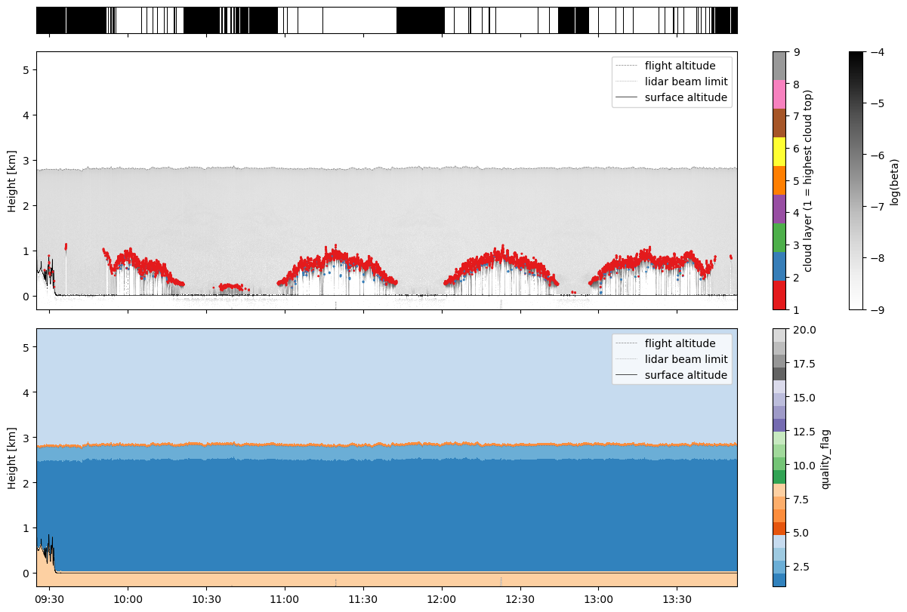
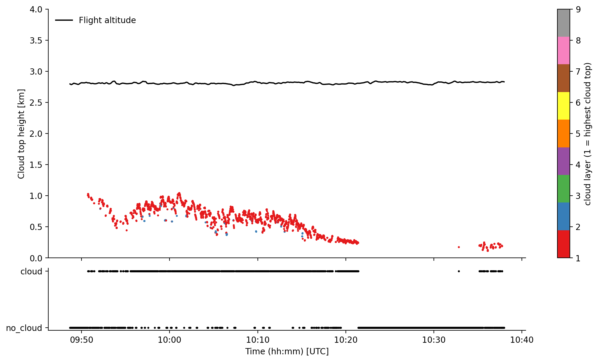

AMALi#
During all campaigns, except HAMAG, the Airborne Mobile Aerosol Lidar for Arctic research (AMALi; Stachlewska et al., 2014) has been operated onboard the Polar 5. From the backscatter signal, a cloud mask and cloud top heights were derived. The dataset is available on the PANGAEA database for ACLOUD, AFLUX, MOSAiC-ACA, and HALO-AC3 and for COMPEX-EC and COMPEX on request.
If you have questions or if you would like to use the data for a publication, please don’t hesitate to get in contact with the dataset authors as stated in the dataset attributes contact or author.
import os
# local caching
try:
from dotenv import load_dotenv
load_dotenv()
local_storage = os.environ['INTAKE_CACHE']
except ImportError:
local_storage = '/tmp/'
kwds = {'simplecache': dict(
cache_storage=local_storage,
same_names=True
)}
# needed for data stored in AC3 cloud
try:
ac3cloud_username = os.environ['AC3_USER']
ac3cloud_password = os.environ['AC3_PASSWORD']
credentials = dict(user=ac3cloud_username, password=ac3cloud_password)
except ImportError:
credentials = {}
print("Only publicaly available datasets from ACLOUD, AFLUX, MOSAiC-ACA, and HALO-AC3 are accessible!")
First, we import the airborne catalogues to get the meta information of the datasets. To do so the ac3airborne package has to be installed. More information on how to do that and about the catalog can be found here.
import ac3airborne
cat = ac3airborne.get_intake_catalog()
datasets = []
for campaign in ['ACLOUD', 'AFLUX', 'MOSAiC-ACA','HALO-AC3','COMPEX-EC','COMPEX']:
datasets.extend(list(cat[campaign]['P5']['AMALi']))
print(datasets)
['ACLOUD_P5_RF04', 'ACLOUD_P5_RF05', 'ACLOUD_P5_RF06', 'ACLOUD_P5_RF07', 'ACLOUD_P5_RF08', 'ACLOUD_P5_RF10', 'ACLOUD_P5_RF11', 'ACLOUD_P5_RF13', 'ACLOUD_P5_RF14', 'ACLOUD_P5_RF16', 'ACLOUD_P5_RF17', 'ACLOUD_P5_RF18', 'ACLOUD_P5_RF19', 'ACLOUD_P5_RF20', 'ACLOUD_P5_RF21', 'ACLOUD_P5_RF22', 'ACLOUD_P5_RF23', 'ACLOUD_P5_RF25', 'AFLUX_P5_RF03', 'AFLUX_P5_RF04', 'AFLUX_P5_RF05', 'AFLUX_P5_RF06', 'AFLUX_P5_RF07', 'AFLUX_P5_RF08', 'AFLUX_P5_RF09', 'AFLUX_P5_RF10', 'AFLUX_P5_RF11', 'AFLUX_P5_RF12', 'AFLUX_P5_RF13', 'AFLUX_P5_RF14', 'AFLUX_P5_RF15', 'MOSAiC-ACA_P5_RF04', 'MOSAiC-ACA_P5_RF05', 'MOSAiC-ACA_P5_RF06', 'MOSAiC-ACA_P5_RF07', 'MOSAiC-ACA_P5_RF08', 'MOSAiC-ACA_P5_RF09', 'MOSAiC-ACA_P5_RF10', 'MOSAiC-ACA_P5_RF11', 'HALO-AC3_P5_RF01', 'HALO-AC3_P5_RF03', 'HALO-AC3_P5_RF04', 'HALO-AC3_P5_RF05', 'HALO-AC3_P5_RF07', 'HALO-AC3_P5_RF08', 'HALO-AC3_P5_RF09', 'HALO-AC3_P5_RF10', 'HALO-AC3_P5_RF11', 'HALO-AC3_P5_RF12', 'HALO-AC3_P5_RF13', 'COMPEX-EC_P5_RF01', 'COMPEX-EC_P5_RF02', 'COMPEX-EC_P5_RF03', 'COMPEX-EC_P5_RF04', 'COMPEX-EC_P5_RF05', 'COMPEX-EC_P5_RF06', 'COMPEX-EC_P5_RF07', 'COMPEX_P5_RF01', 'COMPEX_P5_RF02', 'COMPEX_P5_RF03', 'COMPEX_P5_RF04', 'COMPEX_P5_RF05', 'COMPEX_P5_RF06', 'COMPEX_P5_RF07', 'COMPEX_P5_RF08', 'COMPEX_P5_RF09', 'COMPEX_P5_RF10', 'COMPEX_P5_RF11', 'COMPEX_P5_RF12', 'COMPEX_P5_RF13', 'COMPEX_P5_RF14', 'COMPEX_P5_RF15']
flight_id = 'HALO-AC3_P5_RF09'
#flight_id = 'COMPEX_P5_RF08'
campaign,platform,rf = flight_id.split('_')
We will load the level 1 dataset for a specific flight and see what can be found in there. ds_amali shows all relevant information on the dataset, such as author, contact, or citation information.
try:
ds_amali = cat[campaign][platform]['AMALi'][flight_id].to_dask()
except:
ds_amali = cat[campaign][platform]['AMALi'][flight_id](storage_options=kwds,**credentials).to_dask()
ds_amali
/net/sever/mech/miniconda3/envs/howtoac3/lib/python3.11/site-packages/intake_xarray/base.py:21: FutureWarning: The return type of `Dataset.dims` will be changed to return a set of dimension names in future, in order to be more consistent with `DataArray.dims`. To access a mapping from dimension names to lengths, please use `Dataset.sizes`.
'dims': dict(self._ds.dims),
<xarray.Dataset> Size: 601MB
Dimensions: (i_channel: 6, time: 16082, height: 761)
Coordinates:
* i_channel (i_channel) int64 48B 0 1 2 3 4 5
* time (time) datetime64[ns] 129kB 2022-04-01T09:25:05 ... ...
* height (height) float64 6kB -300.0 -292.5 ... 5.4e+03
Data variables: (12/15)
channel_wvl (i_channel) float64 48B ...
channel_pol (i_channel) <U1 24B ...
channel_analog (i_channel) int8 6B ...
surf_alt (time) float64 129kB ...
ac_zen (time) float64 129kB ...
alt (time) float64 129kB ...
... ...
pitch (time) float64 129kB ...
heading (time) float64 129kB ...
log_beta (i_channel, time, height) float64 587MB ...
lowest_laser_height (time) float64 129kB ...
laser_range_flag (time) int8 16kB ...
quality_flag (time, height) uint8 12MB ...
Attributes: (12/13)
institution: Institute of Geophysics and Meteorology (IGM), University o...
source: airborne observation
author: Jan Schween (jschween@uni-koeln.de); Imke Schirmacher (imke...
convention: CF-1.8
featureType: trajectory
mission: HALO-AC3
... ...
flight_id: RF09
title: logarithmic volume attenuated backscatter coefficient based...
instrument: AMALi (Airborne Mobile Aerosol Lidar for Arctic research)
history: corrected for background, range and incomplete overlap and ...
contact: n.risse@uni-koeln.de
created: 2023-01-27T13:36:02And the same for ds_cloud_top_height and ds_cloud_mask, the level 2 datasets with derived cloud top heights and the clodu mask based on AMALi.
try:
ds_cloud_top_height = cat[campaign]['P5']['AMALi_CTH'][flight_id].to_dask()
except:
ds_cloud_top_height = cat[campaign]['P5']['AMALi_CTH'][flight_id](storage_options=kwds,**credentials).to_dask()
ds_cloud_top_height
/net/sever/mech/miniconda3/envs/howtoac3/lib/python3.11/site-packages/intake_xarray/base.py:21: FutureWarning: The return type of `Dataset.dims` will be changed to return a set of dimension names in future, in order to be more consistent with `DataArray.dims`. To access a mapping from dimension names to lengths, please use `Dataset.sizes`.
'dims': dict(self._ds.dims),
<xarray.Dataset> Size: 3MB
Dimensions: (time: 16082, boundary: 2, cloud_layer: 10)
Coordinates:
* time (time) datetime64[ns] 129kB 2022-04-01T09:25:05 ... ...
* boundary (boundary) <U5 40B 'lower' 'upper'
* cloud_layer (cloud_layer) int64 80B 1 2 3 4 5 6 7 8 9 10
Data variables:
surf_alt (time) float64 129kB ...
ac_zen (time) float64 129kB ...
alt (time) float64 129kB ...
lat (time) float64 129kB ...
lon (time) float64 129kB ...
roll (time) float64 129kB ...
pitch (time) float64 129kB ...
heading (time) float64 129kB ...
lowest_laser_height (time) float64 129kB ...
laser_range_flag (time) int8 16kB ...
valid_height (time, boundary) float64 257kB ...
cth (time, cloud_layer) float64 1MB ...
Attributes: (12/13)
institution: Institute of Geophysics and Meteorology (IGM), University o...
source: airborne observation
author: Nils Risse (n.risse@uni-koeln.de)
convention: CF-1.8
featureType: trajectory
mission: HALO-AC3
... ...
flight_id: RF09
title: cloud top height derived from AMALi observations onboard Po...
instrument: AMALi (Airborne Mobile Aerosol Lidar for Arctic research)
history: derived from l1 product
contact: n.risse@uni-koeln.de
created: 2023-01-27T13:39:35try:
ds_cloud_mask = cat[campaign]['P5']['AMALi_CM'][flight_id].to_dask()
except:
ds_cloud_mask = cat[campaign]['P5']['AMALi_CM'][flight_id](storage_options=kwds,**credentials).to_dask()
ds_cloud_mask
/net/sever/mech/miniconda3/envs/howtoac3/lib/python3.11/site-packages/intake_xarray/base.py:21: FutureWarning: The return type of `Dataset.dims` will be changed to return a set of dimension names in future, in order to be more consistent with `DataArray.dims`. To access a mapping from dimension names to lengths, please use `Dataset.sizes`.
'dims': dict(self._ds.dims),
<xarray.Dataset> Size: 2MB
Dimensions: (time: 16082, boundary: 2)
Coordinates:
* time (time) datetime64[ns] 129kB 2022-04-01T09:25:05 ... ...
* boundary (boundary) <U5 40B 'lower' 'upper'
Data variables:
surf_alt (time) float64 129kB ...
ac_zen (time) float64 129kB ...
alt (time) float64 129kB ...
lat (time) float64 129kB ...
lon (time) float64 129kB ...
roll (time) float64 129kB ...
pitch (time) float64 129kB ...
heading (time) float64 129kB ...
lowest_laser_height (time) float64 129kB ...
laser_range_flag (time) int8 16kB ...
valid_height (time, boundary) float64 257kB ...
cloud_mask (time) int64 129kB ...
Attributes: (12/13)
institution: Institute of Geophysics and Meteorology (IGM), University o...
source: airborne observation
author: Nils Risse (n.risse@uni-koeln.de)
convention: CF-1.8
featureType: trajectory
mission: HALO-AC3
... ...
flight_id: RF09
title: cloud mask derived from AMALi observations onboard Polar 5 ...
instrument: AMALi (Airborne Mobile Aerosol Lidar for Arctic research)
history: derived from l1 product
contact: n.risse@uni-koeln.de
created: 2023-01-27T13:39:35The datasets include attenuated backscatter signal for each channel (level 1 ds_amali: log_beta), the cloud top height (level 2 ds_cloud_top_height: cloud_top_height) and the number of cloud layers (level 2 ds_cloud_top_height: n_cloud_layer), and a cloud mask derived from the optical depth (level 2 ds_cloud_mask: cloud_mask). Additionally, the instrument status is provided and positional data of the aircraft (lat, lon, alt).
Plot the data#
First we need a helper function to fill data gaps with nans.
import numpy as np
def fill_time_gap(ds, dt_max=4):
"""
Fills measurement gaps with nan's. Otherwise, rectangular stripes may occur
ds: xarray dataset
dt_max: highest tolerated time step
"""
# creaty copy of the time index
time_orig = ds.time.values.copy()
# calculate time stemp in seconds
dt = (time_orig[1:] - time_orig[:-1]) / np.timedelta64(1, 'ns') * 1e-9
ix = np.argwhere(dt > dt_max).flatten()
# create times for additional time steps 1s after (before) start (end) of
# measurement gap
time_insert_lower = time_orig[ix] + np.timedelta64(1, 's')
time_insert_upper = time_orig[ix + 1] - np.timedelta64(1, 's')
time_insert = np.insert(time_insert_upper, np.arange(len(ix)),
time_insert_lower)
# insert the additional time steps to original time array and reindex the
# dataset
time_reindex = np.insert(time_orig, np.repeat(ix, 2) + 1, time_insert)
ds = ds.reindex({'time': time_reindex})
return ds
ds_l1 = fill_time_gap(ds_amali, dt_max=1)
ds_cth = fill_time_gap(ds_cloud_top_height, dt_max=1)
ds_cm = fill_time_gap(ds_cloud_mask, dt_max=1)
ds_l1
<xarray.Dataset> Size: 601MB
Dimensions: (i_channel: 6, time: 16082, height: 761)
Coordinates:
* i_channel (i_channel) int64 48B 0 1 2 3 4 5
* time (time) datetime64[ns] 129kB 2022-04-01T09:25:05 ... ...
* height (height) float64 6kB -300.0 -292.5 ... 5.4e+03
Data variables: (12/15)
channel_wvl (i_channel) float64 48B ...
channel_pol (i_channel) <U1 24B ...
channel_analog (i_channel) int8 6B ...
surf_alt (time) float64 129kB ...
ac_zen (time) float64 129kB ...
alt (time) float64 129kB ...
... ...
pitch (time) float64 129kB ...
heading (time) float64 129kB ...
log_beta (i_channel, time, height) float64 587MB ...
lowest_laser_height (time) float64 129kB ...
laser_range_flag (time) int8 16kB ...
quality_flag (time, height) uint8 12MB ...
Attributes: (12/13)
institution: Institute of Geophysics and Meteorology (IGM), University o...
source: airborne observation
author: Jan Schween (jschween@uni-koeln.de); Imke Schirmacher (imke...
convention: CF-1.8
featureType: trajectory
mission: HALO-AC3
... ...
flight_id: RF09
title: logarithmic volume attenuated backscatter coefficient based...
instrument: AMALi (Airborne Mobile Aerosol Lidar for Arctic research)
history: corrected for background, range and incomplete overlap and ...
contact: n.risse@uni-koeln.de
created: 2023-01-27T13:36:02import matplotlib.pyplot as plt
from matplotlib import cm
import matplotlib.dates as mdates
fig, (ax1, ax2, ax3) = plt.subplots(
3, 1, figsize=(12, 8), constrained_layout=True,
sharex=True, gridspec_kw=dict(height_ratios=[0.1, 1, 1]))
# cloud mask
cmap = cm.Greys_r.copy()
cmap.set_bad('pink')
ax1.pcolormesh(
ds_cm.time,
np.array([0, 1]),
np.array([ds_cm.cloud_mask, ds_cm.cloud_mask]),
cmap=cmap, vmin=0, vmax=1,
shading='nearest')
ax1.tick_params(axis='y', labelleft=False, left=False)
ax1.spines[:].set_visible(True)
for ax in (ax2, ax3):
# flight altitude
ax.plot(
ds_l1.time,
ds_l1.alt*1e-3,
color='gray', linewidth=0.5, linestyle='--',
label='flight altitude',
zorder=1
)
# laser beam limit
ax.plot(
ds_l1.time,
ds_l1.lowest_laser_height*1e-3,
color='gray', linewidth=0.5, linestyle=':',
label='lidar beam limit',
zorder=1
)
# surface altitude
ax.plot(
ds_l1.time,
ds_l1.surf_alt*1e-3,
color='k', linewidth=0.5, linestyle='-',
label='surface altitude',
zorder=1
)
# backscatter
im = ax2.pcolormesh(
ds_l1.time,
ds_l1.height*1e-3,
ds_l1.log_beta.sel(i_channel=0).T,
shading='nearest',
cmap='Greys',
vmin=-9, vmax=-4,
zorder=0
)
fig.colorbar(im, ax=ax2, label='log(beta)')
# cloud top heights for each layer
da_cth = ds_cth.cth.stack({'tl': ['time', 'cloud_layer']})
im = ax2.scatter(
x=da_cth.time,
y=da_cth*1e-3,
c=da_cth.cloud_layer, s=1, vmin=1, vmax=9, cmap='Set1',
zorder=2)
fig.colorbar(im, ax=ax2, label='cloud layer (1 = highest cloud top)')
# flag values
cmap = cm.tab20c.copy()
cmap.set_bad('pink')
im = ax3.pcolormesh(
ds_l1.time,
ds_l1.height*1e-3,
ds_l1.quality_flag.T,
shading='nearest',
vmin=1,
vmax=20,
cmap=cmap,
zorder=0
)
fig.colorbar(im, ax=ax3, label='quality_flag')
for ax in [ax2, ax3]:
ax.set_ylim(-0.3, 5.4)
ax.legend(loc='upper right')
ax.set_ylabel('Height [km]')
ax3.xaxis.set_major_formatter(mdates.DateFormatter('%H:%M'))

Load Polar 5 flight phase information#
Polar 5 flights are divided into segments to easily access start and end times of flight patterns. For more information have a look at the respective github repository.
At first we want to load the flight segments of (AC)³airborne
meta = ac3airborne.get_flight_segments()
The following command lists all flight segments into the dictionary segments
segments = {s.get("segment_id"): {**s, "flight_id": flight["flight_id"]}
for campaign in meta.values()
for platform in campaign.values()
for flight in platform.values()
for s in flight["segments"]
}
In this example we want to look at a high-level segment during COMPEX_P5_RF08, the EarthCARE collocation of RF08 during COMPEX.
seg = segments[flight_id+"_hl03"]
Using the start and end times of the segment stored in seg, we slice the MiRAC data to this flight section.
ds_cloud_top_height_sel = ds_cloud_top_height.sel(time=slice(seg["start"], seg["end"]))
ds_cloud_mask_sel = ds_cloud_mask.sel(time=slice(seg["start"], seg["end"]))
Plots#
The flight section during ACLOUD RF05 is flown at about 3 km altitude in west-east direction during a cold-air outbreak event perpendicular to the wind field. Clearly one can identify the roll-cloud structure in the radar reflectivity and the 89 GHz brightness temperature.
%matplotlib inline
import matplotlib.pyplot as plt
import matplotlib.dates as mdates
plt.style.use("../../mplstyle/book")
fig, (ax1, ax2) = plt.subplots(2, 1, sharex=True, gridspec_kw=dict(height_ratios=[1, 0.25]))
# 1st: plot flight altitude and cloud top height with seperate colors for each layer
ax1.plot(ds_cloud_top_height_sel.time, ds_cloud_top_height_sel.alt*1e-3, color='k', label='Flight altitude')
stack = ds_cloud_top_height_sel.cth.stack({'tl': ['time', 'cloud_layer']})
im = ax1.scatter(x=stack.time, y=stack*1e-3, c=stack.cloud_layer, s=2, vmin=1, vmax=9, cmap='Set1')
fig.colorbar(im, ax=ax1, label='cloud layer (1 = highest cloud top)')
ax1.set_ylim(0, 4)
ax1.set_ylabel('Cloud top height [km]')
ax1.legend(frameon=False, loc='upper left')
# 3rd: plot cloud mask in lower part of the figure
ax2.scatter(ds_cloud_mask_sel.time, ds_cloud_mask_sel.cloud_mask, s=2, color='k')
ax2.set_yticks([int(x) for x in ds_cloud_mask_sel.cloud_mask.attrs['flag_values']])
ax2.set_yticklabels([x for x in ds_cloud_mask_sel.cloud_mask.attrs['flag_meanings'].split(' ')])
ax2.set_xlabel('Time (hh:mm) [UTC]')
ax2.xaxis.set_major_formatter(mdates.DateFormatter('%H:%M'))
plt.show()
